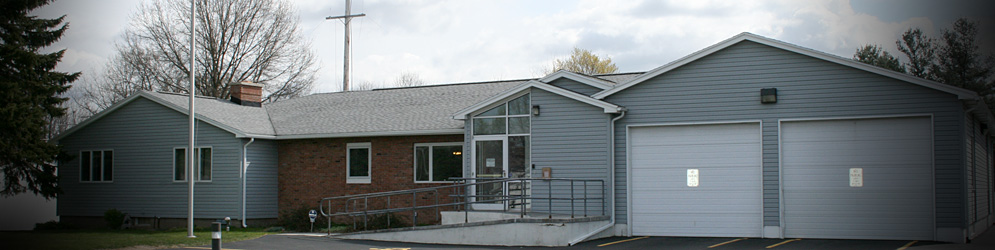

About Us: Facilities and Vehicles
Victor Farmington-Volunteer Ambulance was founded in 1970 to ensure that Emergency Medical Services (EMS) would be based locally. Until 1996, our dispatchers received calls directly at the station from the community; today when you dial 911 your call is dispatched to Victor-Farmington Ambulance personnel stationed in Victor, Fishers, and Farmington who will respond with ambulances to your emergency. We provide a rapid response when time is critical. We believe that our residents and businesses are served best by a local operation, located in our town. Our ability to meet the needs for your emergency request is measured by our ability to respond to 96% of all requests received. Emergency Medical Services are provided by volunteers who live in the community and employees who have long term careers in our community; we collectively develop strong, personal, and unique knowledge of the area and patients served. Our station is always open and you are welcome to visit any day of the week.
Facilities
Victor-Farmington Volunteer Ambulance operates from a centrally located station at 1321 East Victor Road in Victor which covers nearly 70 square miles, as well as a satellite station. The headquarters facility has a communication/dispatch room for communication on several Ontario and Monroe County EMS and inner-county frequencies. This is beneficial because other departments on our geographic borders frequently require inner county teamwork at multiple patient scenes or mutual aid request with Monroe and Wayne county departments.
The facility has a back-up generator and is a certified disaster shelter for the Town of Victor and the American Red Cross. A training room was upgraded in 2000 to allow for large classroom meetings for both regional and county instructional courses as well as membership meetings. If you're interested in using the meeting room, please see our community services page for more information. The headquarters facility also includes 5 bedrooms, a kitchen, dining room and lounge area with an attached 4 bay-heated garage which holds our vehicles.
Our satellite facility is located at 372 High Street in the Town of Victor. The satellite office is staffed Monday-Friday from 8AM-4PM with employees who are qualified at the advanced life support level. The primary purpose of the satellite office is to reduce the response time of qualified advanced emergency medical care to the densely populated commercial and industrial district on the western-most portion of our ambulance district. From this location, one emergency response vehicle identified as Medic 66 is used as a First Responder service for Victor-Farmington Volunteer Ambulance's district, which includes the entire territory of the Fishers Fire District.
The daytime population for the Fishers Fire district can easily exceed 25,000 while nighttime population is about 5,000. This daytime congestion creates traffic delays for the ambulance crew. The emergency medical response from our satellite location and Medic 66 is beneficial in serving the people who work, shop and travel within this area including Eastview Mall, Cobblestone Plaza, Target Plaza, Home Depot, BJ's Wholesale Club and many more retail and industrial business operations, restaurants, hotels and office complexes.
Vehicles
We currently have 4 Type III Braun ambulances identified as 3391, 3392, 3393 and 3394 as well as an additional emergency response vehicle identified as Medic 66. Each of our ambulances is equipped with Intermediate and Advanced Life Support (ALS) equipment with identifiers of Medic 67, Medic 68 and Medic 69. The ALS program includes Class III controlled substance medications commonly used for pain management, cardiac issues, and seizures. Most recently, the ALS program has achieved additional accreditation to perform Rapid Sequence Induction (RSI) procedures in the field. This program has added additional advanced airway skills and equipment including surgical airway. Victor-Farmington Volunteer Ambulance is the only volunteer ambulance in the four county region of Wayne, Ontario, Yates and Seneca to implement this advanced airway procedure.
In addition to first responding to Victor-Farmington's Ambulance crew, Medic 66 is used to provide advanced emergency medical care for our community when a mutual aid ambulance is requested. Likewise Medic 66 infrequently may be used to provide mutual aid into neighboring ambulance districts for advanced life support intercepts.